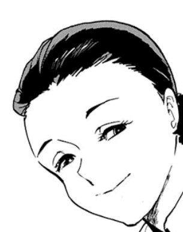
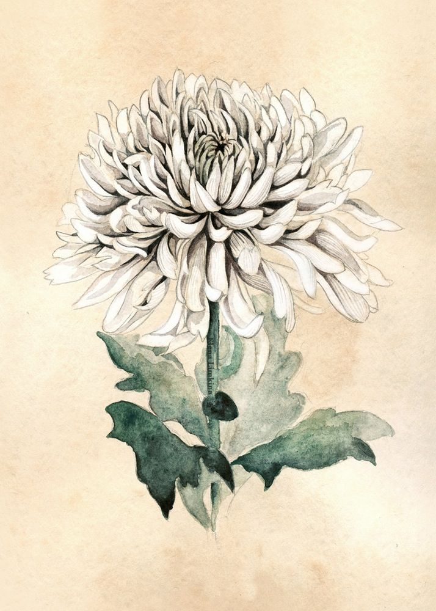

Surrounded by towering hedges and luscious, green and fertile lands, stands a huge mansion with only 3 people inside. Actually, maybe just 2. On this day, like any other day, they observe the outside world through a massive, floor-to-ceiling window before the sun rises.
"Mother! There's a new beast in the garden!" you shout in joy while pointing towards a black, 4-pawed creature in the dark. You remember reading about it in an old Japanese folklore.
"Yes, the sprouts have grown already..." she replies, looking back at you softly, "You should stay inside for the day dear." 
She has been waiting for the shoot to bloom all spring. That's always been her priority. Your eyes move upwards past the full length of trees, where the sun glimpses its ray of sunshine - dawn has arrived.
You sigh and look below, to the dull and bland laundry you're holding.
"And I was looking forward to hanging all these outside" you whisper under your chin.
But before you could ask mother about what potion you'll be making today, the red, dusty telephone rang. Mother rushes to answer the call dropping behind her laundry basket. You follow the ringing sound echoing throughout the mansion and finally reach her but could only catch her last words.
"You've done it?" she sobs silently turning away from you.
With not a moment to lose, she headsails the spiralling staircase towards father's bedroom, a forbidden section of the mansion, and comes down carrying a mysterious cloak and one of her important potions. She gives it all to you.
Her sudden actions surprise you but even more, an unknown-deja vu moment that almost triggers a memory.
"What are all these mother?"
"Dear," she breathes out to loosen her tension, "I need you to do a big task. A task that only you can do. I need you to head to Nicholas's place."
"Oh alright then, I'll wait for you to-"
"On your own. And before the sun sets." she says as her voice slightly trembles.
Your heart beats fast, eyes widen and feel a sudden rush of adrenaline. While stoping your corner lips from raising, mother explains that Nicholas has the potion to make father get better and she needs me to get it instead.
"One last thing, dear, you must remember to stay on the "path". It's the only thing that'll keep you safe. Remember this."
You take your old satchel, put in the vial and wear the cloak. She kisses you goodbye and off you go beyond the brown, oak doors that have been holding you captive.
The outside world is just like how you've viewed it from the windows of the mansion. Except its more alive, real and living. This was it. The moment you've been waiting for. You head past the tall hedges and reach the houses' boundaries.
Still completely mesmerized, you remember about the "path". You must follow the white Chrysanthemum flowers. A direction you remeber by heart - its to the right.
Do you rush to the path or explore around a bit?